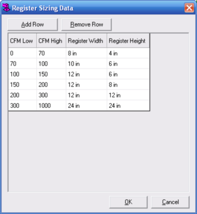

Register Sizing Data (Manual D Ductsize) |
  
|
Register Sizing Data (Manual D Ductsize) |
|
To open this dialog: Right click a trunk duct, then from the popup menu click General Duct Settings, then click Set Register Sizing Data for this System. Or right click a runout duct, then from the popup menu click Register Options, then click Set Register Sizing Data for this System.
This dialog lets you enter the data that determines the sizes of registers that are sized automatically. Runout duct objects in the current system must have their "Auto Assign Register Size" property set to True in order for them to be automatically sized. If the airflow assigned to the duct is within the range defined in the CFM Low and CFM High columns in one of the rows, the Register Width and Register Height in that row will be assigned to the duct. The automatic sizing takes place only during recalculation.

Add Row: Adds a new row to the bottom of the grid.
Remove Row: Removes the currently selected row from the grid.
CFM Low, CFM High: Determines the range of airflow values for a row. If a runout object's airflow is within the range of these columns on a particular row its register will be assigned the width and height defined on that row.
Register Width, Register Height: Sets the dimensions that will be assigned to a register if its runout's airflow falls within the CFM Low and CFM High column values for that row.
OK: Applies the changes you have made on this dialog and closes this dialog. The values on this dialog are saved within the properties of the main trunk of the current system.
Cancel: Closes this dialog without making any changes.